第2章 栈和队列
2.1 顺序栈
2.1.1 栈的概念
栈的插入与删除操作只能在栈顶进行。栈最下面的元素是栈底元素，栈最上面的元素是栈顶元素。栈是后进先出，先进后出的数据结构。最后1个入栈的元素最先出栈。最先入栈的元素最后出栈。栈分为顺序栈和链栈，通过数组存储的栈是顺序栈，通过链表存储的栈叫链栈。将序列{10,20,30,40,50}中的元素依次入栈，入栈过程如图2.1.1所示，栈底元素是10，栈顶元素是50，入栈顺序是10 20 30 40 50，将图2.1.1栈中的元素依次出栈，出栈顺序是50 40 30 20 10，栈顶元素50最先出栈，栈底元素10最后出栈，出栈过程如图2.1.2所示。
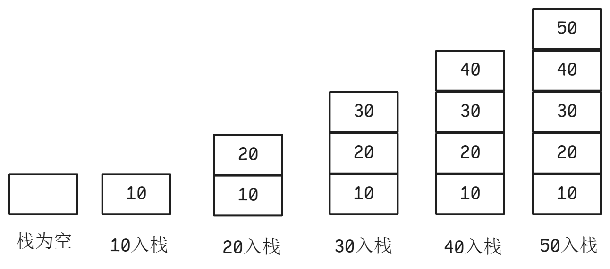
图2.1.1
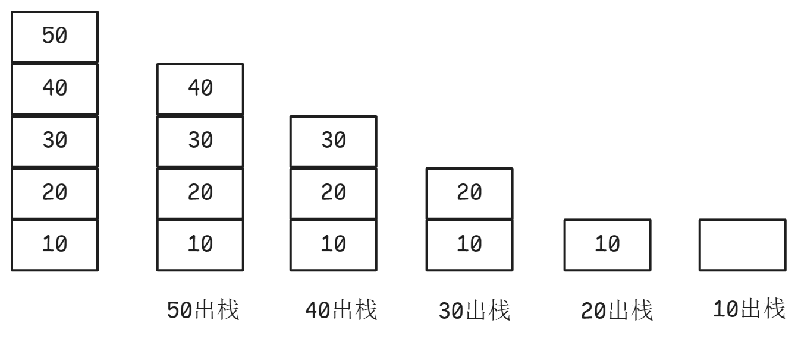
图2.1.2
2.2.2 顺序栈的结构体定义与初始化
顺序栈的结构体定义代码如下：
xxxxxxxxxx//定义顺序栈typedef struct{ //定义数组存储栈中的元素 int data[MaxSize]; //top是栈顶元素的下标，top指向栈顶元素 int top;}Stack;顺序栈的初始化代码如下：
xxxxxxxxxx//栈的初始化void InitStack(Stack &s){ //初始化时候栈为空，此时top的值设置为-1 s.top = -1;}顺序栈的初始化，先定义1个数组data[MAXSIZE]存放栈中的元素，定义int变量top，top的初始值设置为-1，-1表示此时栈为空，当top等于-1时说明栈为空，如图2.1.3所示。
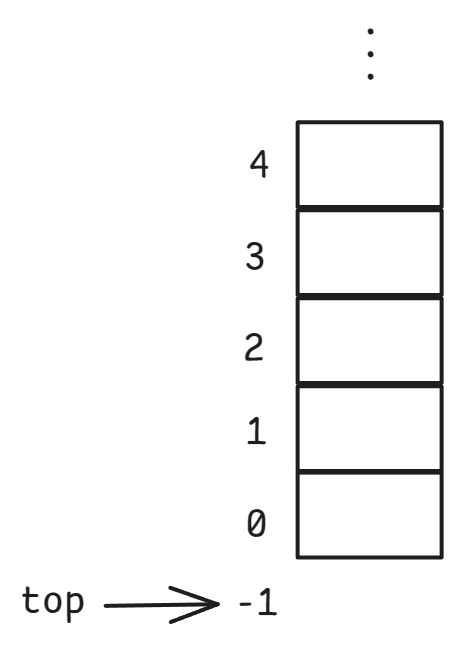
图2.1.3
判断顺序栈是否为空的代码如下：
xxxxxxxxxx//判断栈是否为空bool IsEmpty(Stack &s){ //如果栈顶元素的下标等于-1，说明栈为空 if(s.top==-1){ return true; //如果栈顶元素的下标不等于-1，说明栈不为空 }else{ return false; }}2.2.3 顺序栈的入栈
定义1个数组存储栈中的元素，假设数组最多可以存放两个元素。入栈操作是将入栈元素插入在栈顶，入栈操作先将top+1，然后在下标top的位置插入元素。将元素10插入栈中，栈最开始是空的。top的初始值等于-1，top的值+1，top等于0，在下标0的位置插入10，如图2.1.4所示。
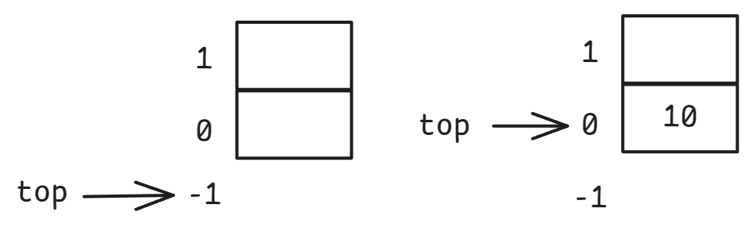
图2.1.4
将20插入栈中，top的值+1，top等于1，在下标1的位置插入20，此时栈已满不能再插入元素，当top的值等于数组的最大容量-1时说明顺序栈已满。如图2.1.5所示。
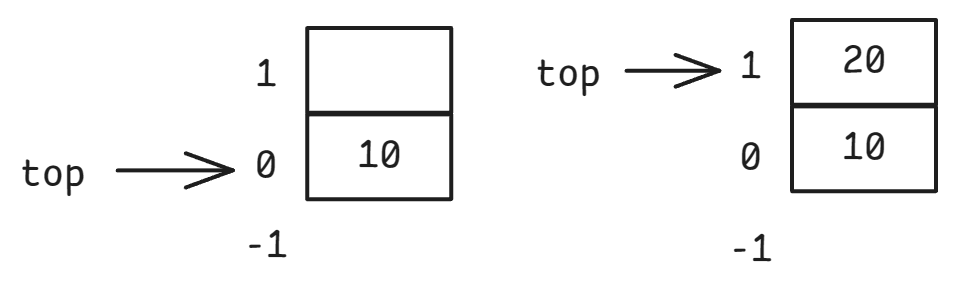
图2.1.5
顺序栈的入栈代码如下：
xxxxxxxxxx//入栈,入栈元素插入在栈顶bool EnterStack(Stack &s,int key){ //如果top的值等于数组最大容量-1，说明栈已满 //栈满了插入失败 if(s.top==MaxSize-1){ return false; //如果栈没满 }else{ //插入之前top+1 s.top++; //在下标top的位置插入key s.data[s.top] = key; return true; }}2.2.4 顺序栈的出栈
出栈操作是删除栈顶元素，出栈操作先获取栈顶元素，然后将top的值-1。如图2.1.6所示，删除栈顶元素20，先获取栈顶元素的值，然后将top的值减1，top指向下标0的位置，这里的删除栈顶元素只是逻辑上删除，内存中的数据还在。因为栈中的数据存储在数组data[ ]中，top是栈顶元素的下标，通过data[top]就可以获取栈顶元素的值。
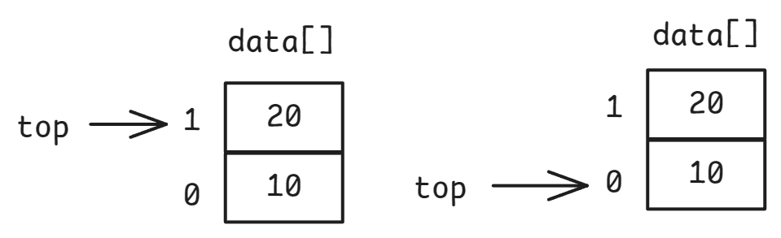
图2.1.6
顺序栈的出栈代码如下：
xxxxxxxxxx//出栈，将栈顶元素出栈bool OutStack(Stack &s,int &key){ //如果栈空了则出栈失败 if(s.top==-1){ return false; }else{ //获取出栈元素(栈顶元素) key = s.data[s.top]; //top-1 s.top--; return true; }}
2.2.5 修改栈顶元素
修改栈顶元素需要先判断栈是否为空，如果栈为空则修改失败。如果栈不为空则修改top指向的元素的值。如图2.1.7所示，修改栈顶元素，修改top指向的元素的值，将top指向的元素的值修改成26，data[top] = 26。
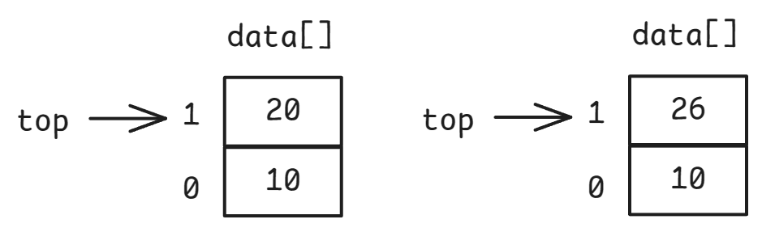
图2.1.7
修改栈顶元素代码如下：
xxxxxxxxxx//修改栈顶元素bool UpdateStack(Stack &s,int key){ //如果栈空了则修改失败 if(s.top==-1){ return false; }else{ //更新栈顶元素 s.data[s.top] = key; return true; }}2.2.6 查询栈顶元素
查询栈顶元素之前需要先判断栈是否为空，如果栈空了则查询失败。如果栈不为空，top指向的元素就是栈顶元素。如图2.1.8所示，查询栈顶元素，栈中的数据存储在数组data[ ]中，top指向栈顶元素，top的值就是栈顶元素的下标，通过data[top]获取栈顶元素的值。
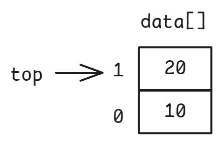
图2.1.8
查询栈顶元素代码如下:
xxxxxxxxxx//查询栈顶元素bool SelectStack(Stack &s,int &key){ //如果栈空了则查询失败 if(s.top==-1){ return false; }else{ //获取栈顶元素 key = s.data[s.top]; return true; }}
2.2 链栈
2.2.1 链栈的结构体定义与初始化
链栈是通过链表实现的栈。链栈中的元素存储在链表中。链栈如图2.2.1所示。

图2.2.1
头结点的next指针指向栈顶结点。链栈中每个结点的next指针指向下一个结点。栈底结点的next指针指向NULL。链栈的结构体定义与单链表类似。链栈的结构体定义代码如下：
xxxxxxxxxx//定义链栈结点typedef struct StackNode{ //数据域 int data; //指针域 struct StackNode* next;}StackNode,*LinkStack;//*LinkStack等价于StackNode*
链栈的初始化需要创建1个头结点，头指针L指向头结点。头结点的next指针指向NULL。链栈的初始化如图2.2.2所示：
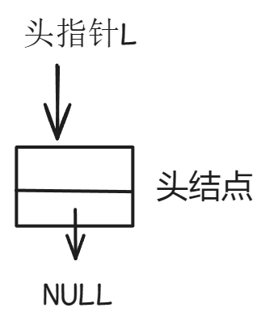
图2.2.2
链栈的初始化代码如下：
xxxxxxxxxx//链栈初始化void InitStack(LinkStack &L){ //创建头结点,头指针L指向头结点 L=(LinkStack)malloc(sizeof(StackNode)); //此时栈为空，将头结点的指针域设置为NULL L->next = NULL;}2.2.2 链栈的入栈
链栈的入栈和单链表的头插法类似，链栈的入栈就是在头结点后面插入新结点。如图2.2.3，2.2.4所示。

图2.2.3
xxxxxxxxxx//链栈的入栈是在头结点的后面插入新结点，新结点插入之前，获取栈顶结点pp = L->next;
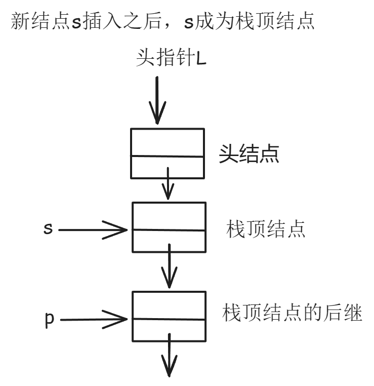
图2.2.4
xxxxxxxxxx//给新结点的数据域赋值s->data = key;//头结点的next指针指向新结点sL->next = s;//新结点s的next指针指向ps->next = p;
链栈的入栈代码如下：
xxxxxxxxxx//入栈元素插入在头结点的后面，头结点的next指针指向栈顶元素bool EnterStack(LinkStack &L,int key){ //获取头结点的后继结点，也就是获取栈顶结点 LinkStack p = L->next; //创建新结点 LinkStack s = (LinkStack)malloc(sizeof(StackNode)); //如果内存满了不能插入 if(s==NULL){ return false; } //给新结点的数据域赋值 s->data = key; //头结点的next指针指向新结点 L->next = s; //新结点的next指针指向头结点的后继结点 s->next = p; return true;}
2.2.3 链栈的出栈
链栈的出栈是删除栈顶结点，删除栈顶结点就是删除头结点的后继结点。删除之前需要先判断栈是否为空，如果栈为空则不能删除。如图2.2.5，2.2.6所示。

图2.2.5
xxxxxxxxxx//获取栈顶结点p = L->next;//获取栈顶结点的后继结点q = p->next;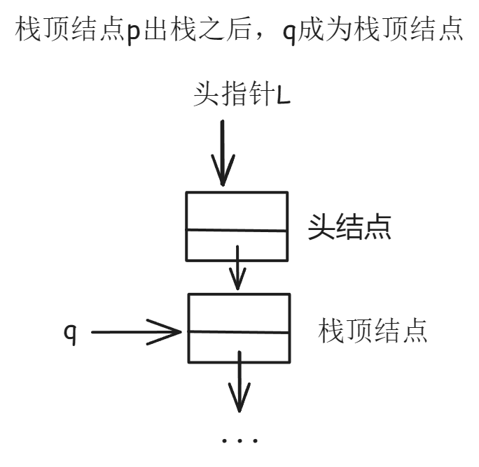
图2.2.6
xxxxxxxxxx//头结点的next指针指向qL->next = q;//销毁结点pfree(p);链栈的出栈代码如下：
xxxxxxxxxxbool OutStack(LinkStack &L,int key){ //如果头结点的next指针为NULL，说明栈为空 if(L->next==NULL){ return false; } //获取栈顶结点 LinkStack p = L->next; //获取栈顶结点的后继结点 LinkStack q = p->next; //头结点的next指针指向q L->next = q; //销毁结点p free(p); return true;}
2.2.4 查询栈顶结点
头结点的next指针指向栈顶结点，通过头结点的next指针可以访问到栈顶结点。如图2.2.7所示。
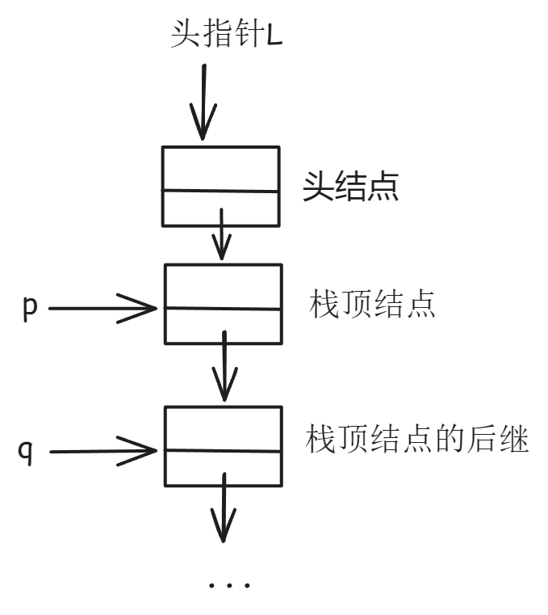
图2.2.7
查询栈顶结点代码如下：
xxxxxxxxxx//查询栈顶结点bool SelectStack(LinkStack L,int &key){ //如果栈空了则查询失败 if(L->next==NULL){ return false; }else{ //获取栈顶结点的值 key = L->next->data; return true; }}
2.2.5 修改栈顶结点
修改栈顶结点的值需要先找到栈顶结点，如图2.2.8所示。
图2.2.8
xxxxxxxxxx//获取栈顶结点p = L->next;//修改栈顶结点的值p->data= key;修改栈顶结点的代码如下：
xxxxxxxxxx//修改栈顶元素bool UpdateStack(LinkStack &L,int key){ //如果栈空了则修改失败 if(L->next==NULL){ return false; }else{ //更新栈顶元素 L->next->data = key; return true; }}2.3 顺序队列
2.3.1 队列的概念
队列只能在队尾插入元素在队头删除元素。在队列里面插入元素叫入队。新插入的元素成为队尾元素。删除队列中的元素叫出队。元素出队之后，出队元素的后继成为新的队头元素。用数组实现的队列叫顺序队列，用链表实现的队列叫链队列。
将序列{10,20,30,40,50}中的元素插入顺序队列中，队列最开始是空的，插入之后如图2.3.1所示，10是队头元素，50是队尾元素。
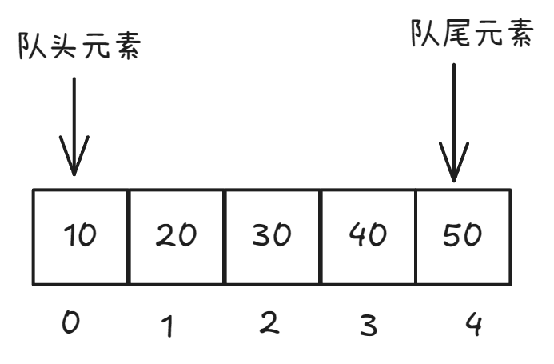
图2.3.1
队头元素10出队，出队元素10的后继20成为新的队头元素。如图2.3.2所示。
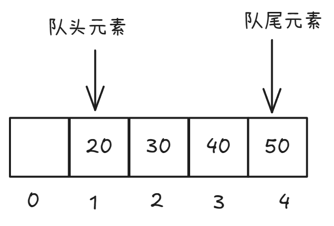
图2.3.2
2.3.2 顺序队列的结构体定义与初始化
顺序队列的结构体定义代码如下：
xxxxxxxxxx//定义常量MaxSize用来记录顺序队列中最多可以存放元素的个数//定义顺序队列typedef struct SqQueue{ //定义数组存放队列中的元素 int data[MaxSize]; //front是队头元素的下标，front指向队头元素 //rear是队尾元素的下标，rear指向队尾元素 //front和rear不是指针，只是看作指针 int front,rear; //length用来记录队列中元素的个数 //当length的值为0时说明队列为空，length的值等于MaxSize说明队列已满 int length;}SqQueue;顺序队列的初始化代码如下：
xxxxxxxxxx//队列的初始化void InitQueue(SqQueue &Q){ //初始化时候队列为空，此时front的值设置为0,rear的值设置为-1 Q.front = 0; Q.rear = -1; //初始化时队列为空 Q.length = 0;}定义数组int data[MaxSize]存放队列中的元素，MaxSize的值根据需要设置，下图中将MaxSize设置为5，表示队列最多存放5个元素，将队头指针front设置为0，队尾指针rear设置为-1，表示队头指针指向下标为0的位置，队尾指针指向下标为-1的位置，length设置为0表示队列为空。如图2.3.3所示。
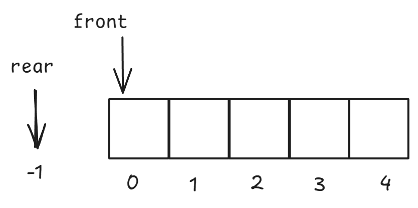
图2.3.3
2.3.3 顺序队列的入队和出队
在顺序队列中，front指向队头元素，rear指向队尾元素。顺序队列的入队需要先将队尾指针rear+1，然后在队尾指针指向的位置也就是下标rear的位置插入新元素。然后队列中元素个数length+1。顺序队列的出队需要先将队头指针front+1，队头指针front指向出队元素的后继，队列中元素个数length-1。顺序队列的出队只是在逻辑上删除元素，内存中的数据并没有删除。
定义数组int data[MaxSize]存放队列中的元素，MaxSize设置为5，将队尾指针rear设置为-1，队头指针front设置为0，将元素10插入队列中，rear+1，rear等于0，在下标rear的位置也就是下标0的位置插入元素10。如图2.3.4所示。
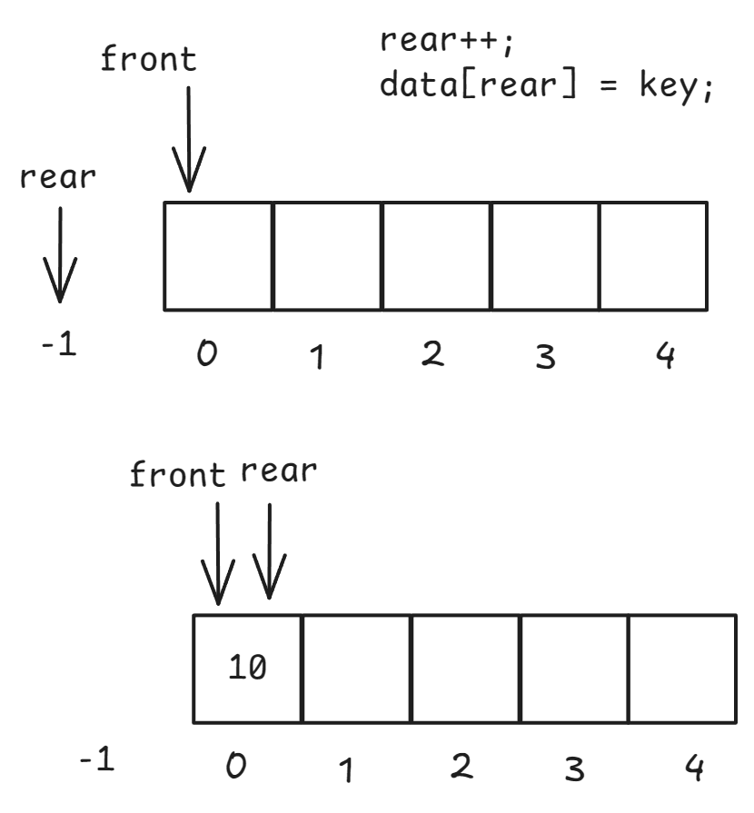
图2.3.4
队列继续入队，将元素20 30 40 50依次插入队列中，插入完成之后50成为队尾元素，front指向10，rear指向50，如图2.3.5所示。
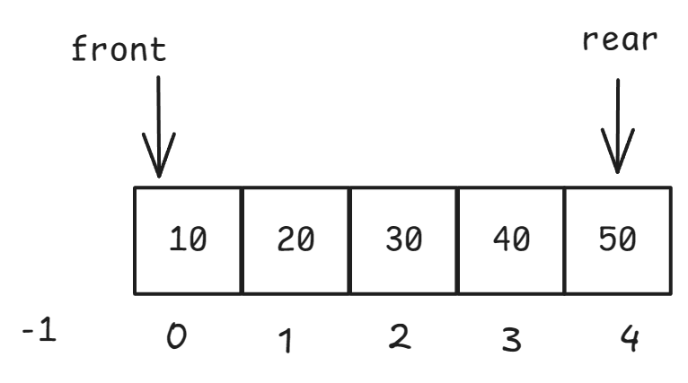
图2.3.5
队头元素10出队，10出队之后20成为新的队头元素，front+1，front等于1，front指向新的队头元素20。如图2.3.6所示。
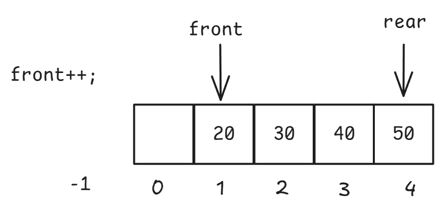
图2.3.6
此时如果往队列中添加元素，需要将rear+1，rear等于5，rear越界了，但是此时数组中还可以存放元素。此时出现假溢出情况。可以通过循环队列解决。
为了解决假溢出问题，需要引入循环队列。循环队列是改进版的顺序队列。通过公式rear = (rear+1)%MaxSize和front = (front+1)%MaxSize实现循环队列。
在循环队列中，将数组看成1个环，front和rear沿着环移动，入队之前需要先判断顺序队列是否已满，如果队列已满则无法入队。如果队列没满并且rear指向数组中最后1个元素，执行rear = （rear+1）%MaxSize，rear指向下标为0的位置。在rear指向的位置也就是下标0的位置插入新元素。如果队列没满并且rear指向的不是数组中最后1个元素，执行rear = (rear+1)%MaxSize等价于执行rear++，在rear指向的位置插入新元素。
出队之前需要先判断顺序队列是否为空，如果队列为空则无法出队。如果队列没空并且front指向数组中最后1个元素，最后1个元素出队，出队后执行front = （front+1）%MaxSize，front指向数组中第1个元素。如果队列没空并且front指向的不是数组中最后1个元素，front指向的元素出队。出队后执行front = (front+1)%MaxSize等价于执行front++，front指向出队元素的后继。总结：入队时先移动rear指针，然后在rear指向的位置插入新元素。出队时front指向的元素先出队，然后移动front指针。
假设循环队列最多可以存放4个元素，front的初始值为0，rear的初始值为-1，rear++，rear等于0，在下标rear的位置插入元素10，如图2.3.7所示。
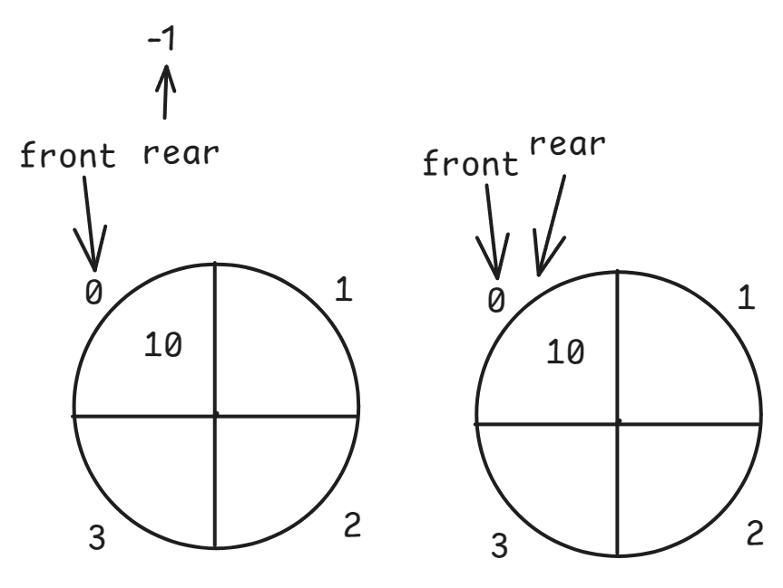
图2.3.7
rear++，rear等于1，在下标rear的位置插入元素20，如图2.3.8所示。
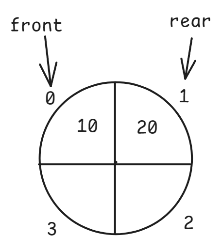
图2.3.8
rear++，rear等于2，在下标rear的位置插入元素30，如图2.3.9所示。
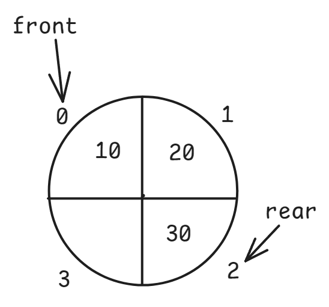
图2.3.9
rear++，rear等于3，在下标rear的位置插入元素40，如图2.3.10所示。
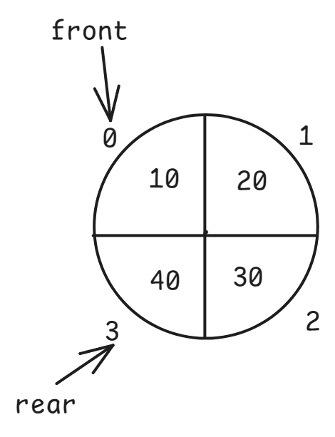
图2.3.10
front指向的队头元素10出队，front++，front指向下标为1的元素20，如图2.3.11所示。
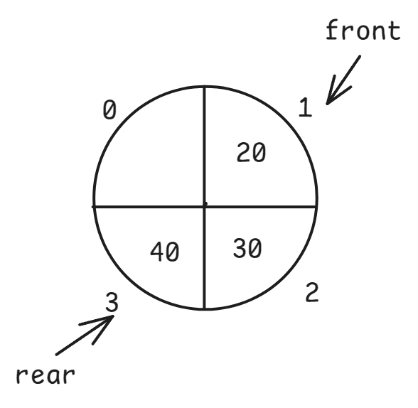
图2.3.11
此时rear指向数组中最后1个元素，执行rear=（rear+1）%4 ，rear等于0，在下标rear的位置插入元素50，如图2.3.12所示。
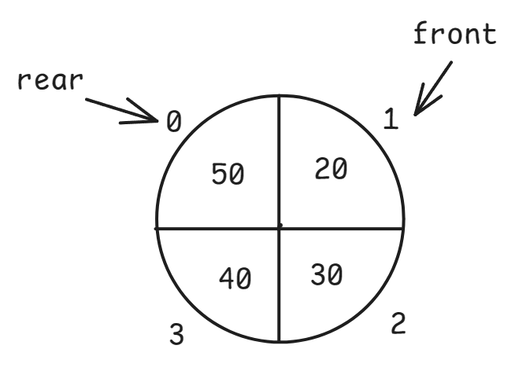
图2.3.12
front指向的队头元素20出队，front++，front指向下标为2的元素30。如图2.3.13所示。
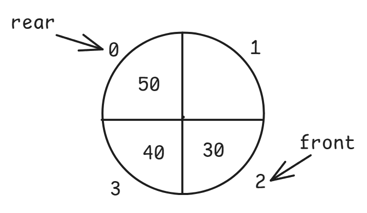
图2.3.13
front指向的队头元素30出队，front++，front指向下标为3的元素40，如图2.3.14所示。
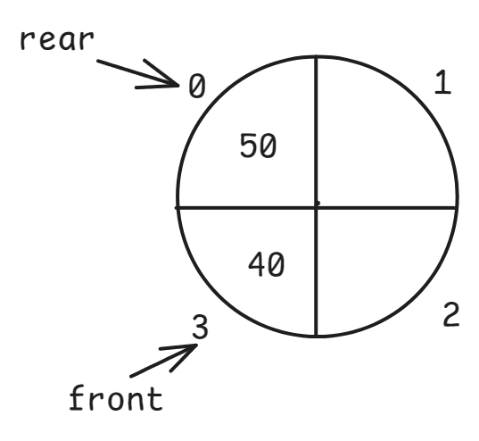
图2.3.14
此时front指向数组中最后1个元素，数组中最后1个元素40出队，执行front = (front+1)%4，front等于0，front指向下标为0的元素50，如图2.3.15所示。
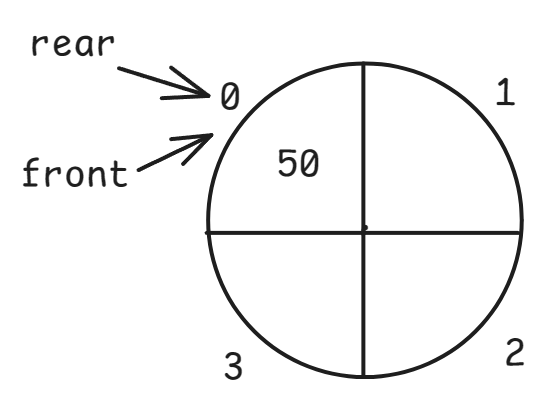
图2.3.15
循环队列的入队代码如下：
xxxxxxxxxx//入队,入队元素插入在队尾bool EnterSqQueue(SqQueue &Q,int key){ //如果队列满了则插入失败 if(Q.length==MaxSize){ return false; }else{ //Q.rear = (Q.rear+1)%MaxSize实现循环队列 //当rear指向数组中最后1个元素时，执行Q.rear = (Q.rear+1)%MaxSize，rear指向下标为0的元素 /*当rear指向的不是数组中最后1个元素，执行 Q.rear = (Q.rear+1)%MaxSize，执行Q.rear = (Q.rear+1)%MaxSize等价于执行Q.rear++*/ Q.rear = (Q.rear+1)%MaxSize; //在下标rear的位置插入key Q.data[Q.rear] = key; //队列中元素个数+1 Q.length++; return true; }}循环队列的出队代码如下：
xxxxxxxxxx//出队，删除队头元素，队头元素的后继成为新的队头元素bool OutSqQueue(SqQueue &Q,int &key){ //如果队列空了则出队失败 if(Q.length==0){ return false; }else{ //获取出队元素(队头元素),front是队头元素的下标 key = Q.data[Q.front]; //Q.front = (Q.front+1)%MaxSize实现循环队列 //当front指向数组中最后1个元素时，执行Q.front = (Q.front+1)%MaxSize，front指向下标为0的元素 /*当front指向的不是数组中最后1个元素时，执行 Q.front = (Q.front+1)%MaxSize,执行Q.front = (Q.front+1)%MaxSize等价于执行Q.front++ */ Q.front = (Q.front+1)%MaxSize; //队列中元素个数-1 Q.length--; return true; }}2.3.4 查询顺序队列的队头元素
因为front是队头元素的下标，通过front可以访问到队头元素。查询顺序队列的队头元素的代码如下：
xxxxxxxxxx//查询队头元素bool SelectSqQueue(SqQueue &Q,int &key){ //如果队列空了则查询失败 if(Q.length==0){ return false; }else{ //获取队头元素 key = Q.data[Q.front]; return true; }}2.3.5 修改顺序队列的队头元素
因为front是队头元素的下标，通过front可以访问到队头元素。修改顺序队列的队头元素的代码如下：
xxxxxxxxxx//修改队头元素bool UpdateSqQueue(SqQueue &Q,int key){ //如果队列空了则修改失败 if(Q.length==0){ return false; }else{ //更新队头元素 Q.data[Q.front] = key; return true; }}
2.4 链队列
2.4.1 链队列的结构体定义与初始化
链队列是通过链表实现的队列。链队列是1个插入与删除操作受限的单链表。链队列只能在链表的尾部插入元素，链表中最后1个元素是队尾元素。只能删除链表中的队头元素，队头元素就是头结点的后继。在链队列中需要定义两个指针front和rear，front指向头结点，rear指向最后1个结点也就是队尾元素。链队列如图2.4.1所示。

图2.4.1
链队列的结构体定义代码如下：
xxxxxxxxxx//定义链队列中的结点typedef struct QueueNode{ //数据域 int data; //指针域 struct QueueNode* next;}QueueNode,*LinkList;//LinkList等价于QueueNode*
//定义链队列typedef struct LinkQueue{ //front指向头结点，rear指向队尾元素 LinkList front,rear;}LinkQueue;
链队列的初始化需要先创建头结点，front和rear指向头结点。此时链队列为空，将头结点的指针域设置为NULL。当头结点的next指针等于NULL时说明链队列为空。链队列的初始化如图2.4.2所示。
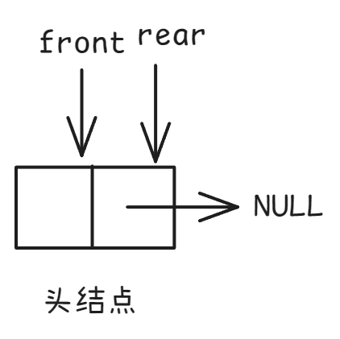
图2.4.2
链队列的初始化代码如下：
xxxxxxxxxx//链队列初始化void InitLinkQueue(LinkQueue &Q){ //创建头结点,front指向头结点 Q.front=(LinkList)malloc(sizeof(QueueNode)); //rear指向头结点 Q.rear = Q.front; //此时链队列为空，将头结点的指针域设置为NULL Q.front->next = NULL;}2.4.2 链队列的入队
链队列的入队就是在链表的末尾插入新元素。也就是在队尾元素的后面插入新元素 。如图2.4.3所示。
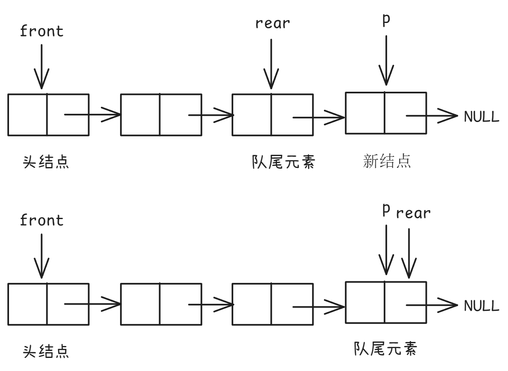
图2.4.3
链队列的入队伪代码如下：
xxxxxxxxxx//给新结点的数据域赋值p->data = key;//给新结点的指针域赋值p->next = NULL;//尾结点的next指针指向新结点rear->next = p;//尾指针指向队尾元素rear = p;链队列的入队代码如下：
xxxxxxxxxx//元素入队bool EnterLinkQueue(LinkQueue &Q,int key){ //创建新结点 LinkList p = (LinkList)malloc(sizeof(QueueNode)); //给新结点的数据域赋值 p->data = key; //给新结点的指针域赋值 p->next = NULL; //尾结点的next指针指向新结点 Q.rear->next = p; //尾指针指向队尾元素 Q.rear = p; return true;}2.4.3 链队列的出队
如图2.4.4所示，链队列的出队就是删除队头元素，队头元素就是头结点的后继。链队列在出队之前需要判断队列是否为空，如果队列为空则不能出队。下面通过代码讲解链队列的出队过程。
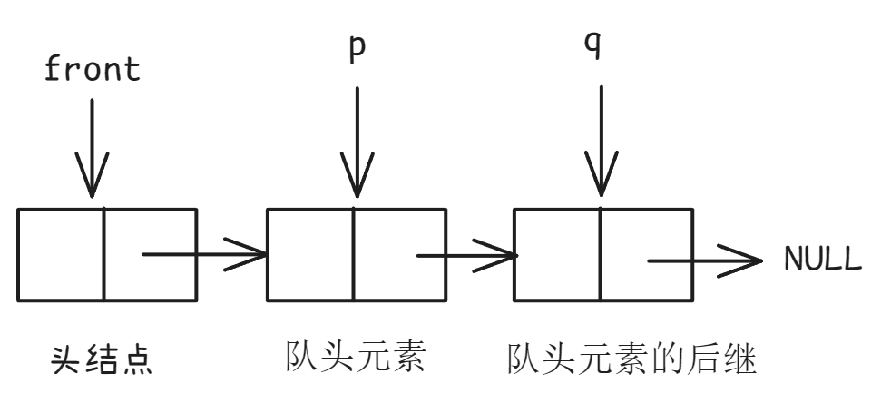
图2.4.4
xxxxxxxxxx//如果队列为空则无法出队if(front->next==NULL){ return false;}//获取队头元素，队头元素是头结点的后继 p = front->next; //获取队头元素的值 key = p->data; //获取队头元素的后继 q = p->next;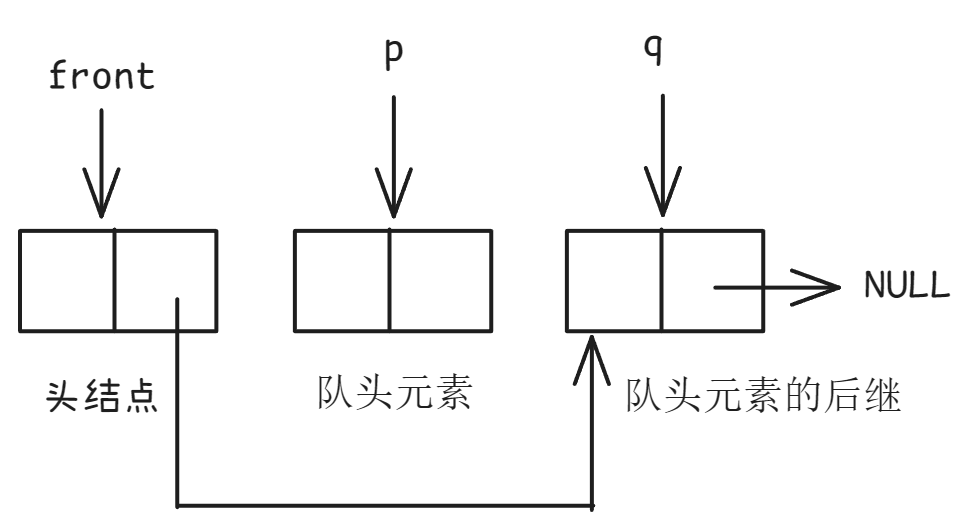
图2.4.5
xxxxxxxxxx//头结点的next指针指向qfront->next = q;//销毁队头元素pfree(p);当队头元素是队列中最后1个元素时，此时的队头元素也是队尾元素。如图2.4.6所示。
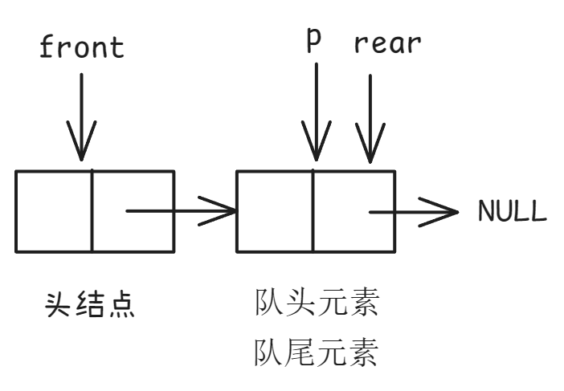
图2.4.6
此时队头元素p出队，队头元素p是队列中最后1个元素，队头元素p出队之后，队尾指针rear指向头结点。最后销毁结点p。如图2.4.7所示。
xxxxxxxxxx//获取队头元素p = front->next; //如果出队元素是队列中最后1个元素if(rear==p){ //队尾指针rear指向头结点 rear = front;}//销毁结点pfree(p); 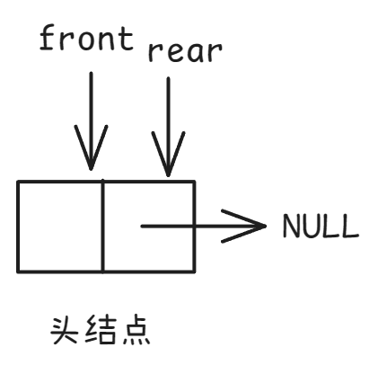
图2.4.7
链队列的出队代码如下：
xxxxxxxxxx//元素出队bool OutLinkQueue(LinkQueue &Q,int &key){ //如果队列为空，则不能出队 if(Q.front->next==NULL){ return false; } //获取队头结点，队头结点是头结点的后继 LinkList p = Q.front->next; //获取出队元素的值 key = p->data; //获取队头结点的后继 LinkList q = p->next; //头结点的next指针指向q Q.front->next = q; //rear指向的元素既是队尾元素也是队头元素时，说明出队元素是队列中最后1个元素 if(Q.rear==p){ //队尾指针rear指向头结点，也就是重新初始化链队列 Q.rear = Q.front; } //销毁队头结点p free(p); return true;}2.4.4 查询链队列的队头元素
链队列的队头元素是头结点的后继，通过头结点的next指针可以获取队头元素，如图2.4.8所示。查询队头元素之前需要先判断队列是否为空，如果为空则无法查询。
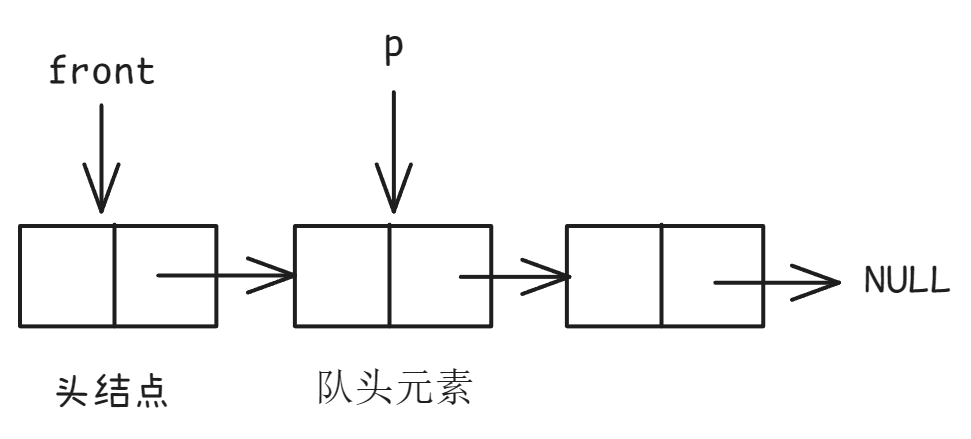
图2.4.8
查询链队列的队头元素的代码如下：
xxxxxxxxxx//查询队头元素的值bool SelectLinkQueue(LinkQueue &Q,int &key){ //如果队列为空则无法查询 if(Q.front->next==NULL){ return false; } //获取队头元素，队头元素是头结点的后继 LinkList p = Q.front->next; //获取队头元素的值 key = p->data; return true;}2.4.5 修改链队列的队头元素
链队列的队头元素是头结点的后继，通过头结点的next指针可以获取队头元素，如图2.4.9所示。修改队头元素之前需要先判断队列是否为空，如果为空则无法修改。

图2.4.9
修改链队列的队头元素代码如下：
xxxxxxxxxx//修改队头元素的值bool UpdateLinkQueue(LinkQueue &Q,int key){ //如果队列为空则无法修改 if(Q.front->next==NULL){ return false; } //获取队头元素，队头元素是头结点的后继 LinkList p = Q.front->next; //修改队头元素的值 p->data = key; return true;}